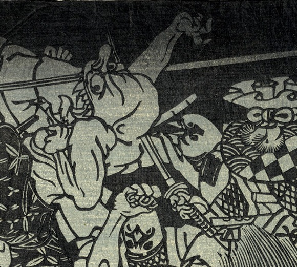

雀の武者に背中を斬られる化物。仰け反って苦悶の表情を浮かべている。
著作者：芳盛／出典：親書誌：U426_nichibunken_0228：昔ばなし舌切雀；ムカシバナシシタキリスズメ／日付：2010／資源識別子：U426_nichibunken_0228_0011_0000
Copyright (c)2010- International Research Center for Japanese Studies, Kyoto, Japan. All rights reserved.